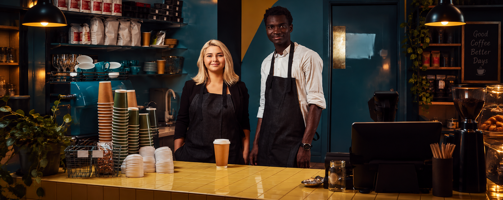
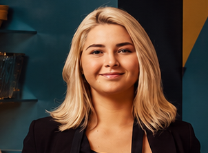
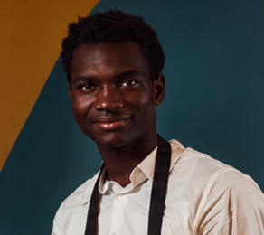

Our Mission
To enrich our community by providing a unique taste of coffee experience, fostering connections, and supporting sustainable and ethical practices from bean to cup.

Founded in 2024, Veloce Espresso started with a simple passion for ethically sourced coffee and a strong desire to create a warm, welcoming community space. Located in the heart of a bustling neighbourhood, we quickly became a favourite spot for local students, young professionals, and residents to connect, work, and enjoy quality time.
To enrich our community by providing a unique taste of coffee experience, fostering connections, and supporting sustainable and ethical practices from bean to cup.
To be the neighbourhood's preferred destination for coffee and community, known for our quality, atmosphere, and commitment to our customers.

Head Barista & Co-Founder

Head Pastry Chef